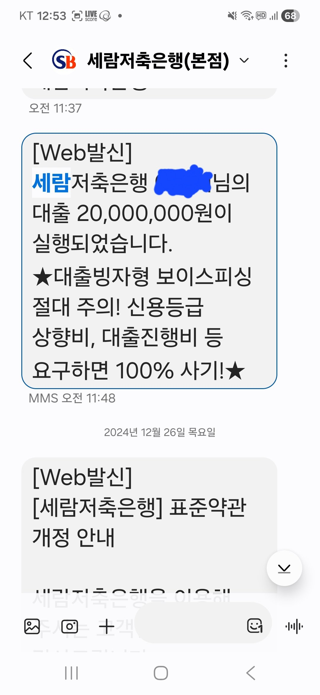
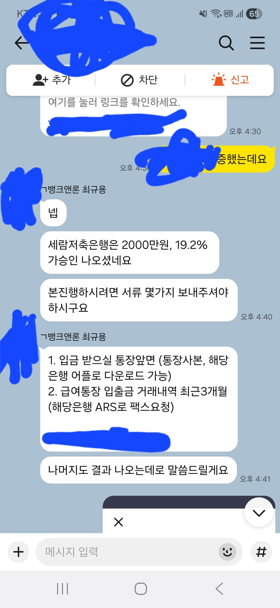

[개인회생자대출 ] 기대출 4500만원, 2천만 19.2% 승인. 최규용 이사님 감사합니다

재직 형태 : 직장인
재직 기간 : 20 년
사대 보험 가입여부 : 유소득 : 연 8000 만원
신용등급

: 신용불가
채무 내역 : 4500 만원
필요 서류 : 신분증, 등본, 원초본, 건강보험 득실확인서, 건강보험 납부확인서, 통장 거래내역 3 개월치
재직기간 20년 개인회생 36회 중 34회 납부한 직장인 입니다.최근 급하게 돈이 필요해서 신청하게 되었습니다.
4500 만원 대출한 상태이고 개인회생 중이라 다른 곳에서 받을수 없는 상태였습니다.
그런데 뱅크앤론에 신청하고 최규용 이사님께 연락을 받았는데, 친절하게 설명해 주셔서 대환할수 있는 충분한 금액이 나왔습니다.
덕분에 2000 만원 추가 대출 상담하고 당일 입금되었습니다.최규용 이사님이 여기 저기 알아봐 주셔서 감사했습니다.
https://cafe.naver.com/cityman88/309850